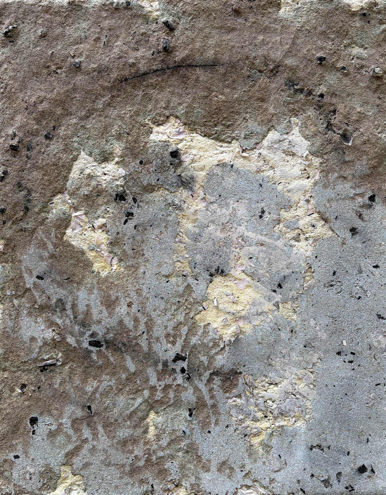
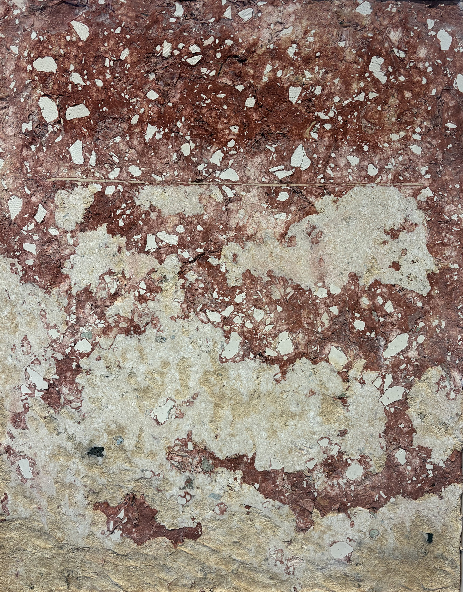
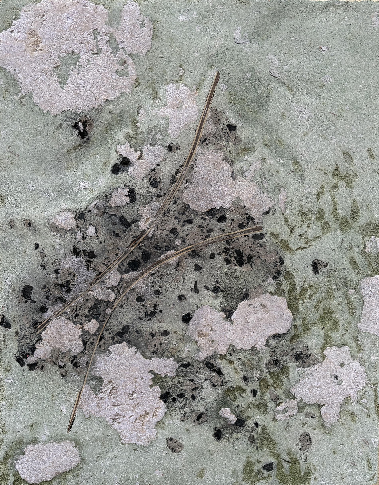
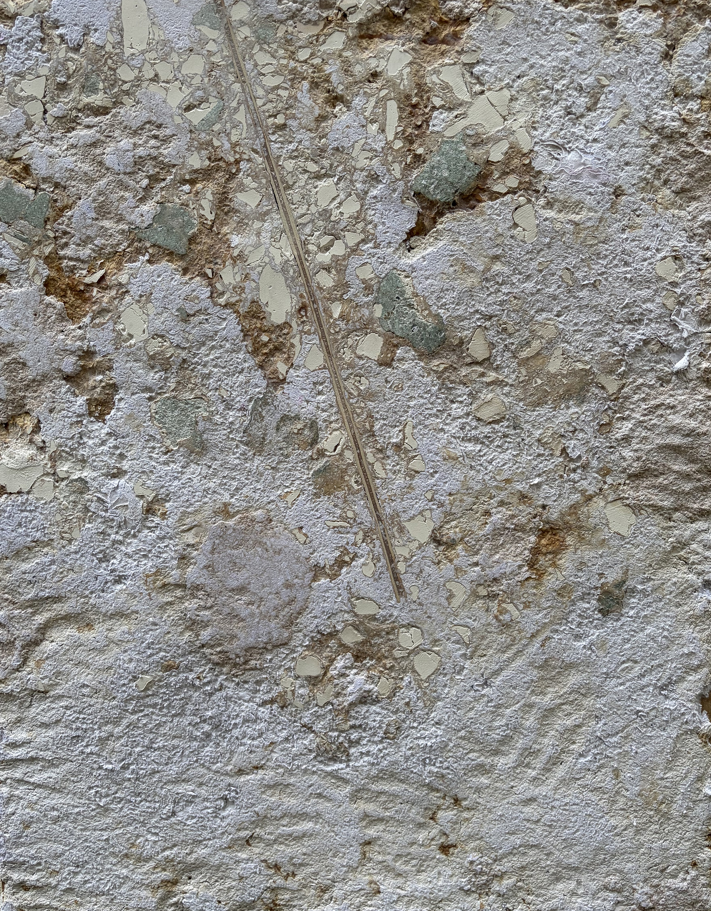

Orientation Series
This is the beginning of a series of sculptures and wall hanging works exploring ways that we orient, navigate, and direct ourselves. What if your direction was not something you chose - what if it had life-like qualities and direction itself watched you and called out to you at times? “Maquette for a Wayfinding Anemometer” is a study for a larger outdoor piece currently under construction. Anemometers are used to measure wind speed. Weathervanes are used to show wind direction. In this piece, a plumbob hangs from the anemometer serving as the directional indicator. How can you choose the direction to look to, when change is the only constant? Misusing an anemometer to indicate direction poses questions about how we can make decisions amidst turbulence.
The two dimensional works are a growing series made from pulped paper from old sketchbooks, meeting notes, gallery invitations, and other documents, as well as crushed plaster from past sculptures, charcoal from burnt past projects, sawdust, and more. Each piece gestures toward a different kind of directional calling or wayfinding moment - a horizontal bar indicating a blockage, a straight path revealing a direct invitation, and so on. These directions are embedded into past material choices and retired creative output as their substrate; like fossils in a conglomerate. Our past experiences guide us - even when we don't know they are doing so.



